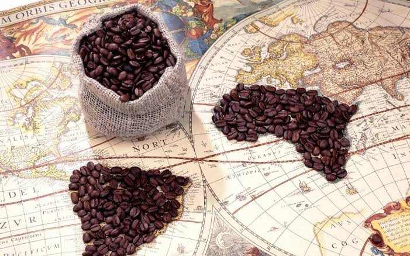

Cada bolsa de Káva tiene una historia detrás: una finca, un clima, una familia productora.
Acá te contamos, paso a paso, todo lo que pasa antes de que el café llegue a tu taza.
De la finca a tu taza

Así empieza todo: el grano recién cosechado.
Introducción
Cada origen tiene un clima diferente.
Cada suelo aporta características únicas.
Cada productor imprime su propia esencia.
Nuestro trabajo consiste en preservar toda esa identidad hasta llegar a tu taza.
Familias productoras que comparten nuestra visión.
Seleccionamos personas, no proveedores.
Visitamos fincas ubicadas en algunas de las regiones cafetaleras más reconocidas del mundo.
Construimos relaciones a largo plazo con familias productoras que comparten nuestra visión de calidad, sostenibilidad y comercio justo.
Cada compra representa una inversión directa en quienes hacen posible este café.
Curvas de tueste diseñadas para cada origen.
El arte del tueste.
No existen recetas universales.
Cada origen necesita un perfil de tueste distinto.
Nuestros lotes se desarrollan lentamente mediante curvas de temperatura cuidadosamente
diseñadas para conservar aromas florales, notas frutales y dulzores naturales.
Empacado pocas horas después del tueste.
Del origen hasta tu mesa.
Empacamos el café pocas horas después del tueste para conservar toda su frescura.
Cada bolsa incluye fecha de tueste, región, variedad, proceso y perfil sensorial.
Porque creemos que conocer el origen transforma la experiencia.